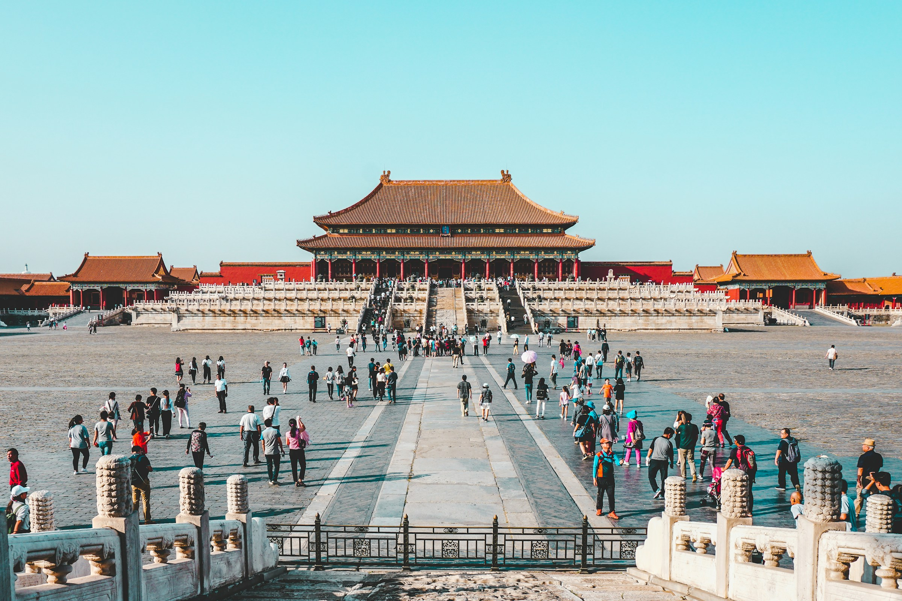
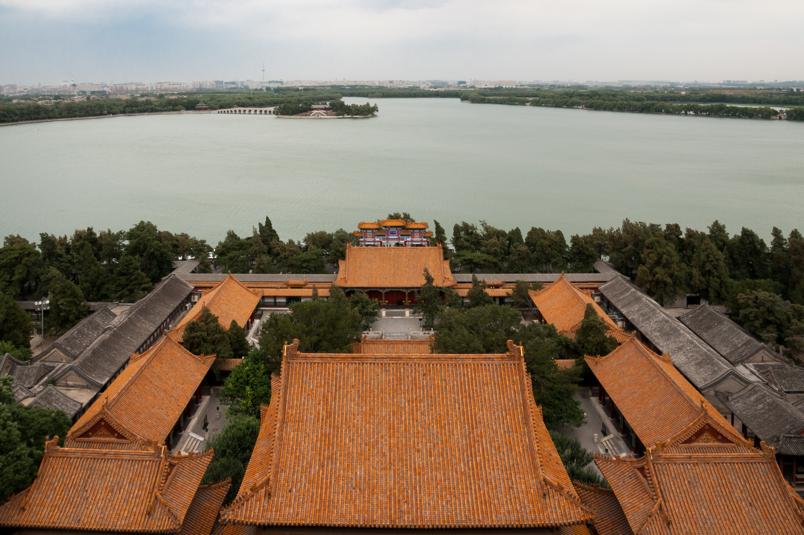
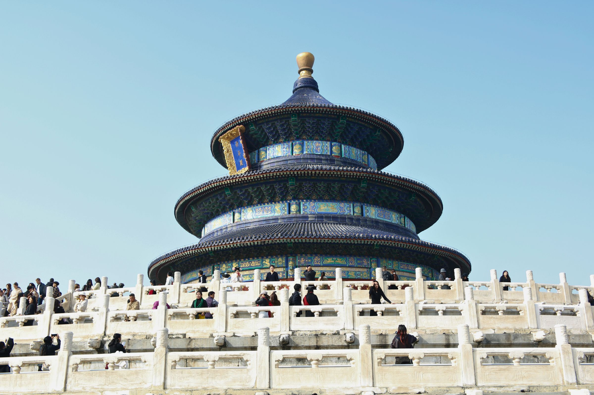
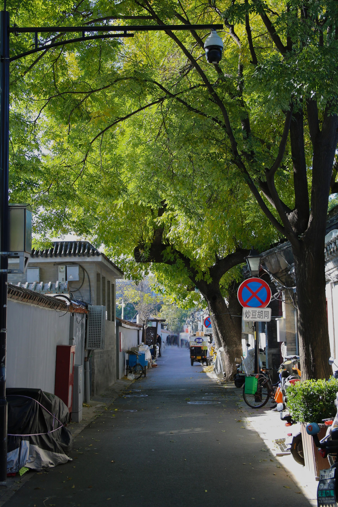
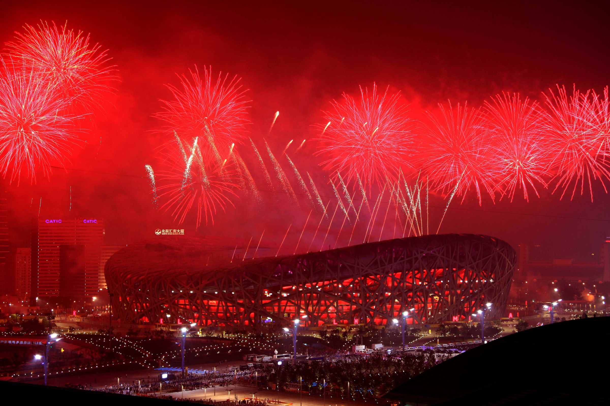
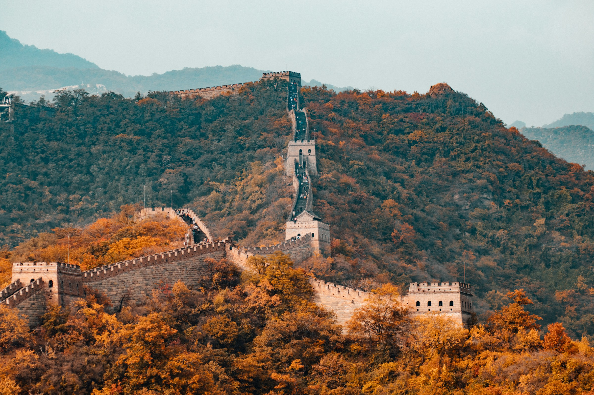
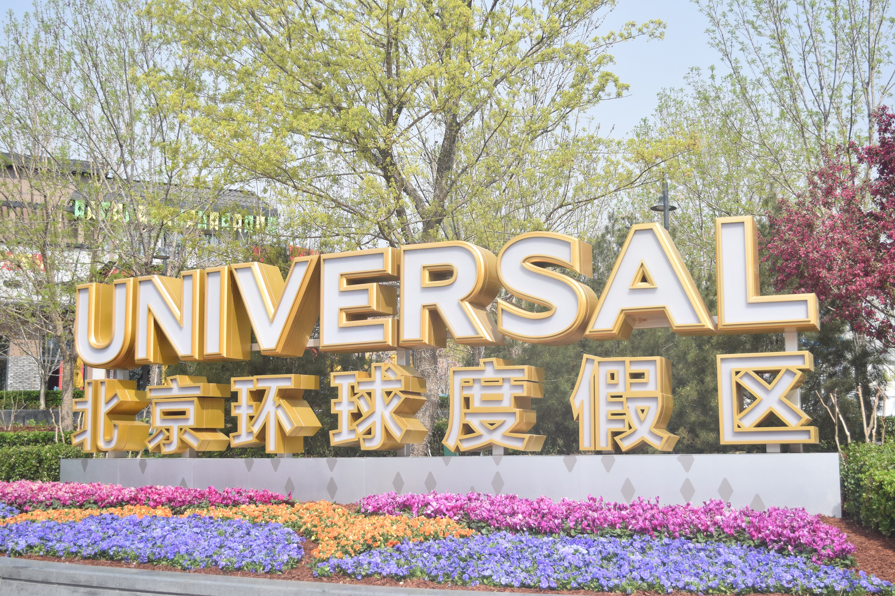

BEIJING COLLECTION · 2026
京城漫游
七种打开方式
从天安门到万里长城，从二环里的北京生活到环球影城的快乐一天。七条线路，按你的时间、住宿偏好与旅行节奏自由选择。
7条独立线路
5—6天舒适行程
2—18人精品团型
CHOOSE YOUR WAY
选择你的北京
七份产品 PDF 已按线路分别整理。点击卡片即可查看完整每日行程、住宿方案、费用包含与预约提醒；未在文件中明确的价格不做虚构，请按实际团期咨询。
轻预算首选
花小钱逛北京
预算友好，经典不减：故宫、长城、天坛、颐和园与圆明园一次走全。
- 0购物 · 0自费
- 五档住宿方案可选
- 国潮茶叙在地体验

京津双城26°C 北京
古都经典加天津一日游，用更舒服的节奏认识两座北方城市。
- 北京+天津双城
- 早市与北平记忆演绎
- 四环品质住宿

二环内连住二环之上
住进城市核心，经典景点与国家级博物馆主题兼顾。
- 二环内四晚连住
- 国博/军博/首博择一
- 三次北京特色餐

核心位置住在天安门南100米
把住处放在中轴线旁，感受北京清晨、夜色与胡同生活。
- 天安门南核心区域
- 升旗出行更从容
- 小包团专车接送

品牌住宿二环亚朵
亚朵、漫心、桔子水晶等品牌住宿与北京经典线路组合。
- 二环沿线品牌酒店
- 博物馆主题日
- 国潮茶叙体验

经典首选你好北京
自然地理、人文历史、老北京民俗三大主题，适合第一次到访。
- 三大主题串联
- 亲子家庭友好
- 三次特色餐食

文化+欢乐双环记
四天古都经典加一整天北京环球影城，大小朋友都尽兴。
- 环球影城一日游
- 二环品质住宿
- 北京经典景点全覆盖
看见六百年古都
也看见今天的北京